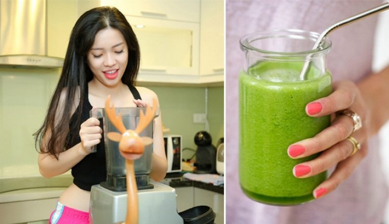

August 18, 2020 Thời gian :
Các nguyên liệu làm sinh tố bơ chuối đều rất dễ kiếm.
– Khoảng 200gram thịt bơ
– Khoảng 100gram thịt chuối
– 30-40ml sữa tươi
– Khoảng 20ml sữa đặc có đường
– 5-10ml nước đường
– Một vài viên đá.
– Các dụng cụ làm sinh tố bơ chuối bao gồm: máy xay sinh tố, muỗng, ly, dao, thớt…
Sau khi đã có đầy đủ các nguyên liệu, bạn có thể bắt tay ngay vào làm món sinh tố bơ chuối đầy hấp dẫn. Cách làm sinh tố bơ chuối sẽ chỉ tốn khoảng 5-10 phút là bạn đã có ngay ly thức uống thơm ngon hảo hạng rồi đấy!
Đầu tiên, bạn đem bơ cắt dọc và tách nhẹ lấy hột trái bơ. Có thể sử dụng dao bấm mạnh vào hạt bơ và xoay nhẹ để lấy hột bơ dễ dàng hơn. Sau đó, bạn tiếp tục bổ quả bơ là 4 phần và dùng tay lột nhẹ nhàng vỏ bơ. Với bơ sáp hoặc các loại bơ đã chín thì cách lấy thịt bơ sẽ rất đơn giản và dễ dàng. Thực hiện tương tự với chuối để tách được phần thịt chuối.
Trước khi bắt tay vào thực hiện món sinh tố bơ chuối bạn cần đảm bảo dụng cụ bếp được rửa sạch và lau khô. Sau đó, bạn tiến hành cho bơ, chuối, sữa tươi, sữa đặc vào cối và xay nhuyễn.
Tiếp đó, bạn đổ vào cối xay khoảng 10ml nước đường và đá vào xay thêm 10 giây là được. Cuối cùng, bạn chỉ cần rót hỗn hợp sinh tố bơ chuối ra. Vậy là bạn đã có ngay cách làm sinh tố bơ chuối chuẩn vị rồi đấy!
Món sinh tố bơ chuối sau khi được hoàn thành bao giờ cũng có màu xanh nhạt bắt mắt. Sinh tố đạt chuẩn có độ mịn, nhuyễn và không còn đá dăm. Đặc biệt, nếu bạn thích uống lạnh. Bạn có thể để tại ngăn mát từ 15-20 phút trước khi thưởng thức.
Giữa rất nhiều hương vị sinh tố trái cây, sự kết hợp giữa bơ và chuối tạo nên công thức cực hoàn hảo. Bạn biết không, không chỉ thơm ngon, cực dễ thưởng thức, mỗi ly sinh tố bơ chuối còn chứa rất nhiều giá trị dinh dưỡng đấy. Các nghiên cứu đã chỉ ra rằng với khoảng 250ml sinh tố. Cơ thể bạn sẽ nhận được 572 Calories, các vitamin A, B, C, D cực giàu có. Không chỉ vậy, công thức sinh tố bơ chuối còn cung cấp năng lượng giàu có cho ngày dài năng động.
Để có 1 ly sinh tố bơ chuối với hương vị hoàn hảo bạn nên lưu ý đến một số điều sau:
– Bạn nên lựa chọn bơ sáp hoặc bơ đã chính dẻo, không chọn mua bơ còn xanh hoặc bơ đã dập úng. Bạn cũng nên tránh chọn mua bơ không đều màu hoặc cầm còn rắn tay.
– Nên chọn mua chuối chín vừa tới, có mùi thơm đặc trưng, không quá nũn hoặc quá xanh.
– Trong quá trình làm sinh tố, sữa sẽ giúp món ăn thêm sánh mịn vừa đủ. Do đó, bạn không cần phải đổ thêm nước hay các chất kích béo.
– Bên cạnh đó, bạn có thể lựa chọn thêm cafe hay các loại trái cây khác vào sinh tố
Hương vị béo ngậy của bơ hòa quyện với độ ngọt tự nhiên của chuối rất tự nhiên chắc chắn rằng món ăn này sẽ khiến bạn thích mê ngay từ lần đầu tiên thử. Vậy thì hãy áp dụng ngay cách làm sinh tố bơ chuối và cho chúng tôi thấy thành quả của bạn nhé!